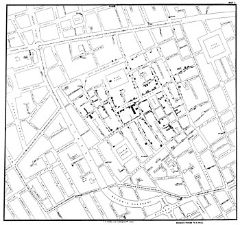
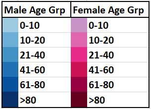

I am Kavitha Andem and I am student of MS in Applied Data Science at IUPUI. This visualization is part of mini project for the course Data Visualization FA20-IN-INFO-H517.
The visualizations done as part of this project try to replicate the map drawn by Dr John Snow to plot the deaths caused by the cholera epidemic of London in the year 1854. In August of 1854, a very serious outbreak of Cholera happened in Longon, England. Within the initial 1 week, 10% of the population of the SoHo locality were dead and the residents started leaving the area. The theory at that time , was that the cholera outbreak was spreading through air and this was known as Miasma Theory. However, Dr John Snow, didnot believe in this and suggested that Water was the cause for the spread of Cholera. Though he was well known he could not convince other Doctors that the spread was because of water. So, he presented a map of the cholera outbreak and he was able to convince the general public and the public health system that the root cause was water and consuming boiled water coule eliminate the chances of contracting Cholera. Below is the map created by Dr John Snow.

The data for this project was provided by Prof Reda and we received 4 files and information on distribution of population by age group.
File 1 : streets.json - This file has the various lines on the map in the form of various combinations of points.
File 2 : deaths_age_sex.csv - The deaths by age and sex has the location of the deceased individual along with their age group and gender, there are a total of 571 deaths listed in this file.
File 3 : deathdays.csv - The deathdays.csv files lists the number of people deceased on each day between 19-Aug and 29-Sep of 1854. This file doesn't list the gender or age of the deceased individual. We can link the deaths by age sex file with this file as the deaths in deaths by age sex were listed on the day the death happened, so we can identify the location, gender and age group of the individual.
File 4 : pumps.csv - The pumps file lists the 13 water pumps in the SoHo community along with their location
Map : The map shows the SoHo community in 1854 and the pumps are represented by the red cirlces. There are 13 pumps. The diseased individuals are shown as small rectangles with different color codes. The colors represent the gender and age group of the invdividuals. The hues of blue represent Males and the hues of Purple represent Females. I selected diverging colors from Color Brewer as we are representing the same primary category i.e., Gender and trying to distinguish the various age groups.

Bar chart for Deaths by Day: The bar chart represents the number of deaths on each day from 19 - Aug to 29 - Aug. The highest deaths 143, were reported on 1st Sept 1854. There is an interaction between this bar chart and the map. As we hover the mouse over the bars in the bar chart, the deaths on that day are highlighted in the map and all other rectangles representing deaths on other days are hidden. Once we move out from one bar to other bar the deaths on that day are shown and when we are completely outside the bars, we can see all the deaths on the map.
Double Bars chart : The Double bars chart represents the percentage of cholera deaths by age group and the percentage of assumed population distribution in London. We are assuming the population distribution based on the data from US. An interaction between the double bars chart and the map was attemped, but it got confusing, so I had to abandon it.